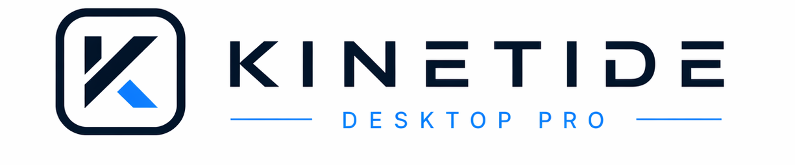
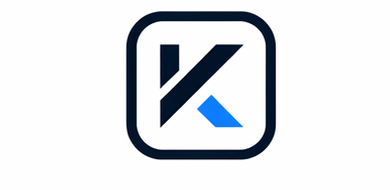

聯絡購買
客戶透過 LINE 或 Email 留下姓名、球隊/單位、Email、預計使用電腦數。

KINETIDE DESKTOP PRO
給教練與場館使用的 Desktop Pro 支援中心。付款完成後，我們會人工確認並提供啟動碼； 軟體更新、問題回報與授權換機也都從這裡開始。
SUPPORT
請優先透過 LINE 聯絡 KINETIDE Support。若需要寄送檔案、付款紀錄或較完整的問題描述，也可以使用 Email。
BILLING
目前採人工確認後發啟動碼。付款方式與方案內容請先透過 LINE 或 Email 聯絡 KINETIDE Support。
客戶透過 LINE 或 Email 留下姓名、球隊/單位、Email、預計使用電腦數。
KINETIDE Support 確認方案、付款方式與開通期限。付款完成後，客戶回傳付款證明。
你在 KINETIDE License Admin 建立授權，綁定客戶 Email 與方案期限。
客戶在 Desktop Pro 輸入啟動碼，系統會線上驗證並綁定第一台電腦。
DOWNLOAD
Desktop Pro 開啟時會自動檢查版本。若有新版，按「下載並更新」會下載 DMG 並自動打開。

最新版：1.1.4-beta
下載最新版 DMG 下載後將 App 拖到 Applications 覆蓋舊版，再重新啟動。LICENSE
每次開始新測試前會向 KINETIDE License Server 驗證授權。
一組 License 預設綁定一台電腦。超額使用會被後台拒絕。
不可開始新測試、不可產生正式報告、不可匯出正式 PDF / CSV。
未授權仍可查看歷史資料、運動員、團隊資料，並可做資料備份。
CONTACT
請透過 LINE 或 Email 聯絡 KINETIDE Support，並附上啟動碼、Device ID 與 App 版本。